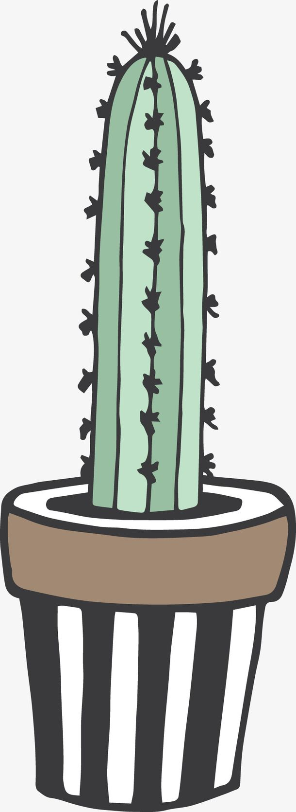

<div></div>
<div id="type-one" class="top-btn">js 计算高度后，fix元素</div>
<div id="type-two" class="top-btn" style="position: -webkit-sticky;position: sticky;">sticky样式，兼容性待考察</div>
<div></div>
<div>
    <aside>参考文档： [【前端词典】4 种滚动吸顶实现方式的比较](https://juejin.im/post/5caa0c2d51882543fa41e478?utm_source=gold_browser_extension)</aside>
</div>
<link rel="stylesheet" href="./demo.css">

<script src="/lib/utils.js"></script>
<script src="./demo.js"></script>